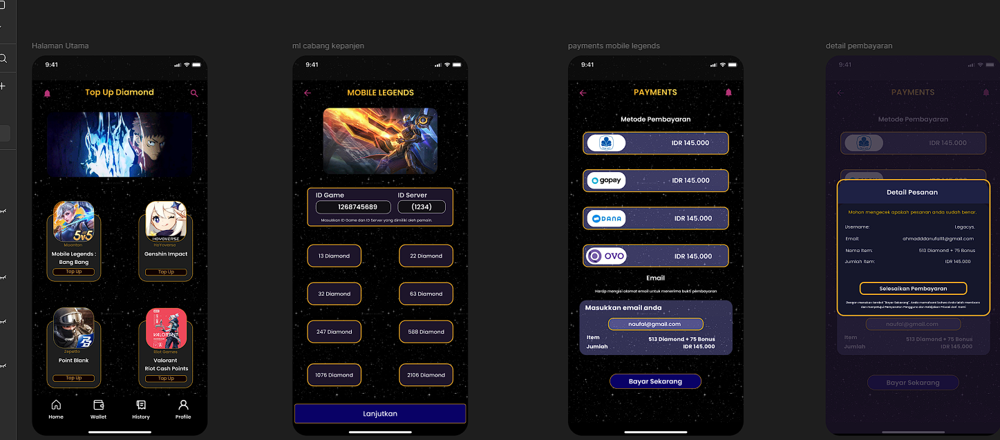
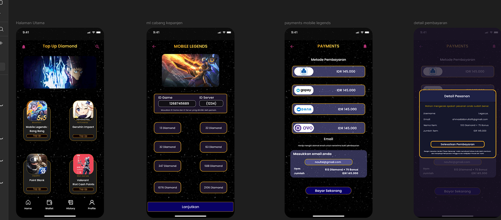

Tentang Saya
Halo! Saya Rafi Hilmi, lahir di Tangerang. Saya merupakan siswa dari SMKN 12 Surabaya yang memiliki ketertarikan dalam bidang pengembangan aplikasi serta desain antarmuka (UI/UX).
Perkenalkan, nama saya Rafi Hilmi Anggara Biantoro, seorang pelajar jurusan Pengembangan Perangkat Lunak dan Gim (PPLG). Saya memiliki minat besar dalam bidang teknologi, pemrograman, dan desain UI/UX.
Sejak awal masuk SMK, saya tertarik untuk mempelajari bagaimana sebuah aplikasi maupun website dapat dibangun dan dikembangkan agar bermanfaat bagi banyak orang. Saya terus belajar bahasa pemrograman, membuat proyek kecil, dan mencoba berbagai tools seperti HTML, CSS, PHPMyAdmin, Unity, Figma, hingga Visual Studio Code.
Saya juga menyukai dunia pengembangan game, karena menurut saya teknologi tidak hanya tentang fungsi, tetapi juga tentang pengalaman pengguna yang menyenangkan. Oleh karena itu, saya berusaha menggabungkan keterampilan teknis dengan kreativitas dalam setiap karya yang saya buat.
Bagi saya, belajar adalah sebuah perjalanan tanpa akhir. Setiap proyek dan kesalahan adalah kesempatan untuk berkembang menjadi lebih baik. Dengan kerja keras, konsistensi, dan semangat, saya yakin bisa terus meningkatkan kemampuan saya di masa depan.


 
